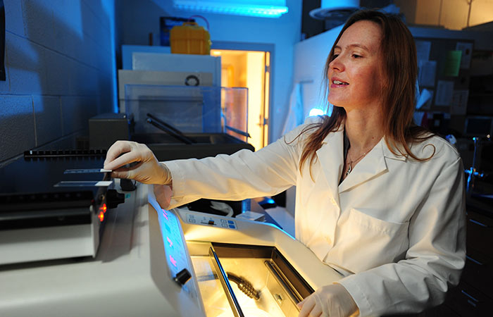

Research
For Life
Research Resources
Top resources for researchers, industry partners and students.

Profiles of Research
Meet our groundbreaking researchers, including research fellow Quan Li (pictured) who is developing a window that will control heat flow as well as light, for energy savings.
Meet Kent State Researchers
The Magazine
Published quarterly, Research for Life details Kent State University’s pursuits in driving innovation.
Read the Magazine OnlineFunding
Find out how to help fund your next project.
Support
We’re here to help. Find resources for taking your research to the next level.
Meet the Research Division
The Division of Research and Sponsored Programs is committed to creating a highly trained technical workforce in Northeast Ohio that will support existing industries and attract new businesses to the region, and to accelerating job growth.